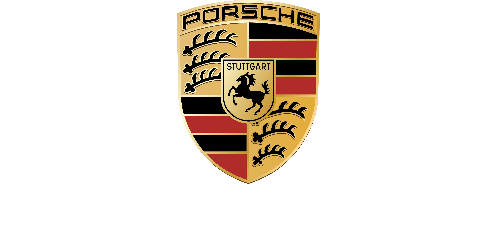
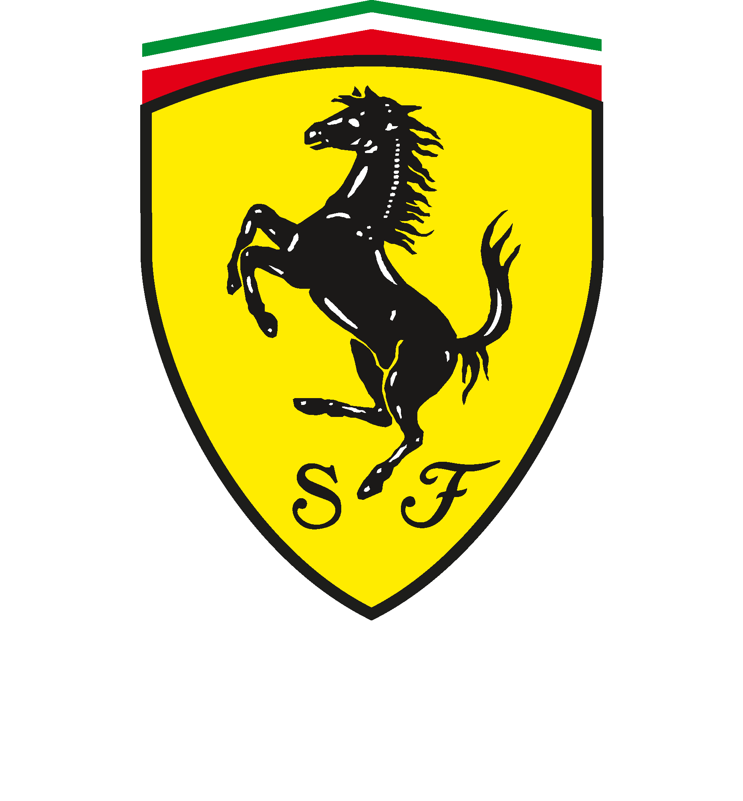

Dr. Ing. h.c. F. Porsche AG, geralmente abreviado para Porsche AG, ou somente Porsche, é uma das principais marcas de automóveis esportivos do mundo, criada na Áustria e, hoje, sediada em Stuttgart, Alemanha.


Ferrari é uma fabricante italiana de carros esportivos de luxo com sede em Maranello. Fundada por Enzo Ferrari em 1939 na divisão de corridas da Alfa Romeo com o nome Auto Avio Costruzioni, a empresa construiu seu primeiro carro em 1940.

A Mercedes-Benz é uma marca alemã de automóveis pertencente ao grupo Daimler AG, criada em 1924 e resultado de uma fusão entre a Benz & Cie. e a Daimler-Motoren-Gesellschaft. É a mais antiga empresa de automóveis e veículos comerciais da Alemanha e do mundo.